Hướng dẫn sử dụng Fox Harness
Trợ lý AI chạy trên máy của bạn: trò chuyện, đọc và gửi Gmail, tìm web, tự dựng quy trình tự động.
1Bắt đầu
Mở app, đăng nhập, đổi mật khẩu.
1Mở app và đăng nhập
Vào http://127.0.0.1:3080.
- Tên đăng nhập:
admin - Mật khẩu mặc định:
12345678
Góc phải trên có nút chọn ngôn ngữ và nút bật chế độ tối.
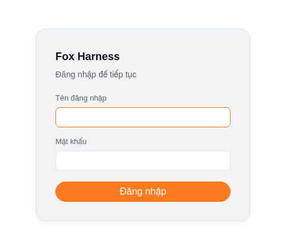
2Đổi mật khẩu
Bấm Admin ở góc dưới trái → Cài đặt.
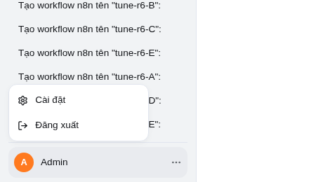
3Tab Tài khoản
Nhập mật khẩu mới → Lưu mật khẩu mới.
Nút Đăng xuất cũng nằm ở đây.
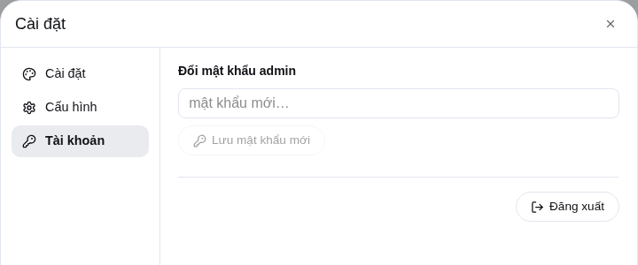
2Trò chuyện
Hỏi bằng lời thường. Agent tự chọn công cụ để làm.
1Gửi yêu cầu
Gõ vào ô Nhắn cho agent… → Gửi.
Mỗi việc agent làm hiện thành một dòng nhỏ, ví dụ "Đã dùng n8n_list_credentials". Bấm vào dòng đó để xem chi tiết.
File agent tạo ra hoặc tải về nằm ở thanh Tệp trong thư mục làm việc, ngay trên ô nhập.
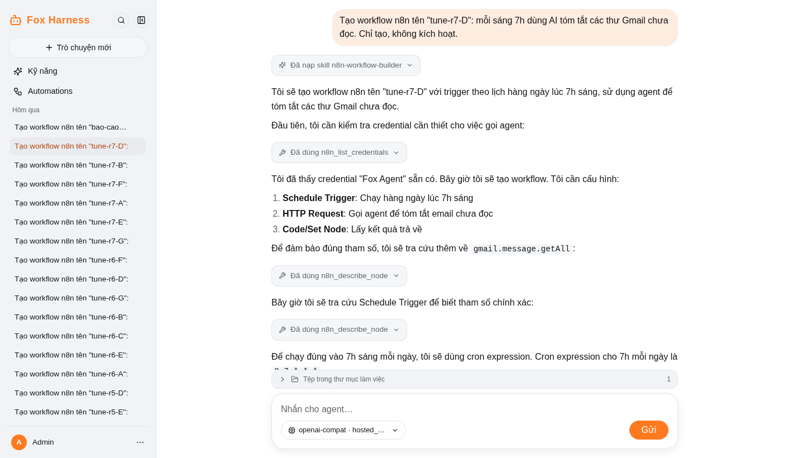
2Đổi tên, xoá cuộc trò chuyện
Rê chuột vào một dòng ở thanh bên → bấm … → Đổi tên hoặc Xoá.
Bấm Trò chuyện mới để mở cuộc trò chuyện mới.
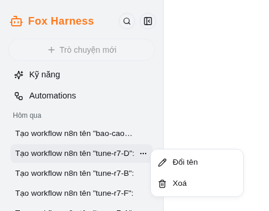
3Đổi model
Mỗi cuộc trò chuyện có thể dùng model riêng.
1Chọn model
Bấm nút model cạnh ô nhập (bên trái nút Gửi) → chọn một model.
- Tự triển khai (mặc định): model có sẵn.
- ZAI: các model GLM.
- OpenRouter: Claude, GPT…
Đổi model chỉ áp dụng cho cuộc trò chuyện đang mở.
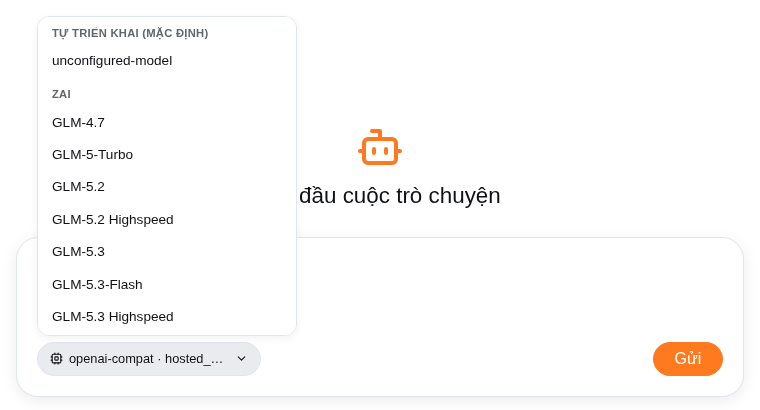
2Dán key cho Z.ai / OpenRouter
Muốn dùng Z.ai hay OpenRouter thì cần key của nhà cung cấp đó.
Admin → Cài đặt → Cấu hình → dán key → Lưu.
Lấy key: z.ai · openrouter.ai/keys
Chưa có key mà vẫn chọn, app sẽ tự mở trang này để bạn dán key.
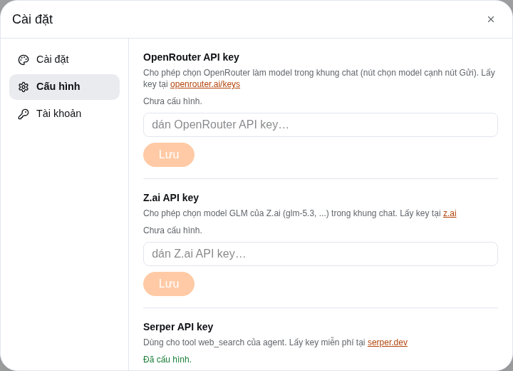
4Skill
Skill là bản hướng dẫn giúp agent làm một loại việc theo cách của bạn.
1Gọi skill bằng dấu /
Gõ / trong ô chat → chọn skill → viết tiếp yêu cầu.
Skill bạn tự tạo có nhãn của tôi.
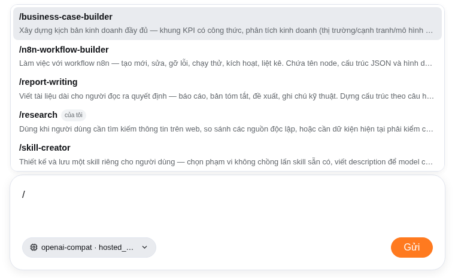
2Xem, sửa, xoá skill
Bấm Kỹ năng ở thanh bên.
- Skill của tôi: sửa được, xoá được.
- Skill có sẵn: chỉ xem.
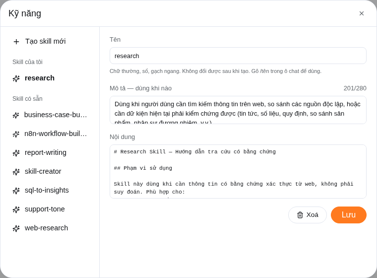
3Tạo skill mới
Kỹ năng → Tạo skill mới, rồi điền:
- Tên: chữ thường và gạch ngang, ví dụ
bao-cao-tuan - Mô tả: khi nào thì dùng skill này
- Nội dung: hướng dẫn chi tiết
Cách nhanh hơn: nói trong chat "Tạo cho tôi skill viết báo cáo tuần…" Agent gửi bản nháp cho bạn xem, bạn đồng ý thì nó mới lưu.
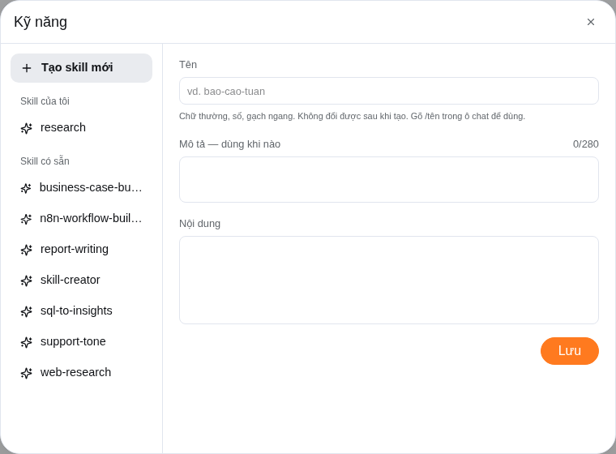
5Gmail
Agent dùng Gmail qua một trình duyệt thật. Bạn xem được mọi thao tác của nó.
1Mở màn hình trình duyệt của agent
Vào http://127.0.0.1:6080/vnc.html → bấm Connect.
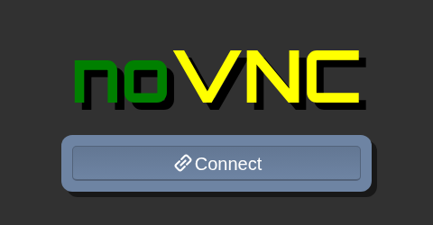
2Đăng nhập Gmail (chỉ một lần)
Trong cửa sổ đó, mở mail.google.com và đăng nhập như bình thường.
Thấy hộp thư là xong. Lần sau không phải đăng nhập lại.
Ai mở được trang này là đọc được thư của bạn. Đừng chia sẻ địa chỉ này ra ngoài.
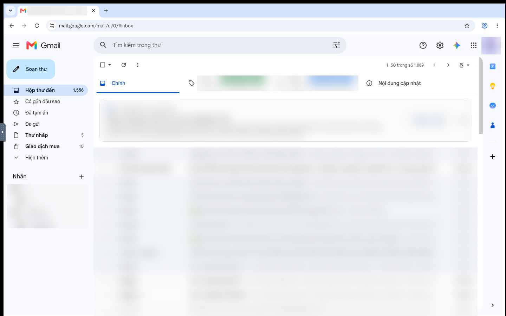
3Nhờ agent làm việc
Nói trong chat, ví dụ:
Trước khi gửi, trả lời hay xoá thư, agent luôn hỏi lại bạn. Đọc và tìm thư thì agent làm luôn.
Trong lúc agent đang làm, đừng bấm vào cửa sổ noVNC: cú bấm của bạn có thể làm gián đoạn agent. Mỗi lần chỉ nên có một cuộc trò chuyện dùng Gmail.
6Tự động hoá (n8n)
Nhờ agent dựng quy trình tự động, ví dụ mỗi sáng tóm tắt thư mới.
1Chuẩn bị (một lần)
- Mở http://127.0.0.1:5678 → đăng nhập tài khoản n8n đã được cấp. Không ghi hoặc chia sẻ mật khẩu trong chat, tài liệu hay workflow.
- Trong n8n: Settings → n8n API → tạo API key.
- Trong Fox Harness: Cài đặt → Cấu hình:
- dán key vừa tạo vào ô n8n API key;
- tự đặt một chuỗi bí mật bất kỳ vào ô n8n webhook secret.
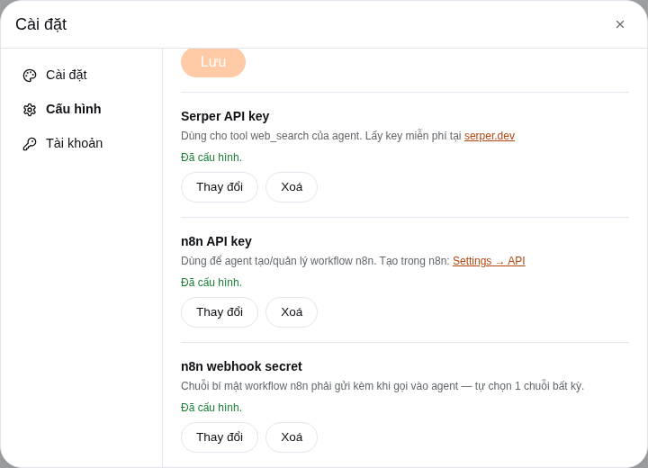
2Kiểm tra credential "Fox Agent" trong n8n
Credential này để workflow gọi được agent. Vào Credentials; nếu đã có Fox Agent kiểu Header Auth, mở nó để kiểm tra. Chỉ tạo mới khi chưa có để tránh credential trùng.
Khi tạo mới: Credentials → Create credential → Header Auth:
| Tên | Fox Agent |
|---|---|
| Name | x-n8n-webhook-secret |
| Value | chuỗi bí mật bạn đã đặt ở bước 1 |
Giá trị Value là bí mật: không chụp rõ, không gửi qua chat và không dán vào hướng dẫn.
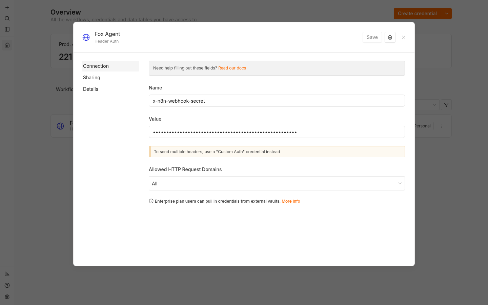
3Nhờ agent dựng workflow
- Workflow mới tạo luôn ở trạng thái tắt.
- Muốn bật, nói "kích hoạt workflow tom-tat-sang". Khung chat sẽ hiện hộp để bạn đồng ý.
- Muốn sửa, nói tiếp trong cùng cuộc trò chuyện, ví dụ "đổi sang 8h".
Mỗi lần workflow gọi agent sẽ tạo một cuộc trò chuyện mới tên "Automated request from n8n". Mở ra để xem agent đã làm gì.
4Xem workflow
Bấm Automations ở thanh bên.
- đang bật / đang tắt: trạng thái của workflow.
- Bấm vào một workflow để xem các lần chạy gần đây.
- Mở trong n8n: mở workflow đó để xem chi tiết.
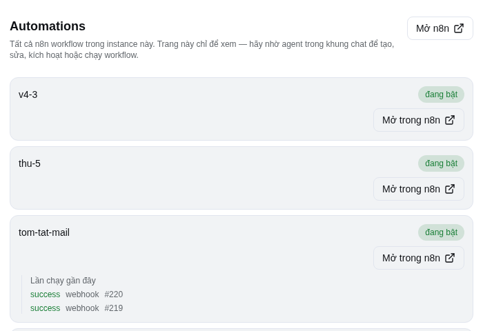
5Workflow trong n8n
Bước gọi agent là một node HTTP Request dùng credential Fox Agent. Workflow mẫu gồm bước nhận trigger, gọi Fox Agent rồi trả kết quả. Agent tự điền phần này, bạn không cần sửa.
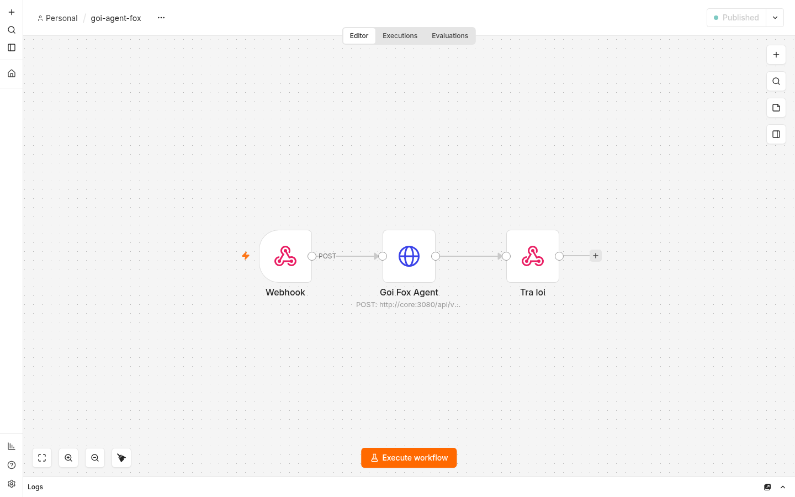
7Tự code agent (dành cho người tự host)
Bạn có toàn bộ source code. Hãy xem n8n là bộ hẹn giờ/đường ống, còn Fox Agent là phần biết đọc yêu cầu, suy nghĩ và dùng công cụ.
1Hai luồng phối hợp với nhau như thế nào?
| Phần | Dễ hiểu là | Nên dùng khi |
|---|---|---|
| n8n | Người điều phối theo quy tắc cố định: đến 7 giờ, có form mới, có dòng dữ liệu mới… | Hẹn giờ, gọi API đã biết, rẽ nhánh theo dữ liệu, lưu kết quả. |
| Fox Agent | Người thực hiện biết đọc ngữ cảnh và tự chọn công cụ. | Tóm tắt, soạn nội dung, đọc Gmail/tài liệu, tìm web, phân tích hoặc làm việc với file/code. |
| Code trong source | Các "bộ phận" làm nên Fox Agent. | Muốn đổi hành vi lâu dài, thêm công cụ mới, thay giao diện hoặc nối dịch vụ riêng. |
Ví dụ: n8n đánh thức agent lúc 7 giờ; agent đọc thư chưa đọc và viết bản tóm tắt; n8n nhận kết quả để gửi tiếp hoặc lưu lại. Không cần đặt cả Gmail node lẫn Fox Agent làm cùng một việc.
2"Vibe coding" của agent nằm ở đâu?
Không có nút riêng tên Vibe coding. Đó là cách bạn mô tả kết quả mong muốn bằng lời thường trong khung chat, rồi agent tạo hoặc sửa file trong Tệp trong thư mục làm việc.
Hãy nêu: mục tiêu, người dùng, ví dụ dữ liệu, giao diện/kết quả mong muốn và tiêu chí xong. Bạn xem file agent tạo ở thanh Tệp trong thư mục làm việc, rồi nói tiếp: "đổi màu", "thêm cột", "làm giống mẫu này".
Thư mục làm việc của cuộc chat không tự động là source code đang host Fox Harness. Muốn agent sửa chính dự án này qua chat, người quản trị phải đặt/cho phép repo đó trong workspace phù hợp. Bình thường, hãy tự sửa source bằng editor rồi build lại.
3Bản đồ source: muốn sửa gì thì mở đâu?
| Muốn thay đổi | Chỗ bắt đầu | Ghi nhớ |
|---|---|---|
| Tính cách, quy tắc trả lời, cách agent làm việc | packages/bundle-core/src/prompt.ts | Đây là "não hướng dẫn" của agent. Sửa nhỏ, rõ ràng; đừng bỏ các quy tắc an toàn/xác thực nếu chưa hiểu hậu quả. |
| API, chat, approval, file trong workspace | packages/bundle-core/src/gateway.ts | Đây là cầu nối giữa giao diện và phiên chạy agent. |
| Đăng nhập, giao diện, sidebar, chat, trang Automations | apps/web/ | app/page.tsx là điểm ghép màn hình; các thành phần nằm trong components/features/. |
| Thêm một công cụ riêng, ví dụ CRM hoặc ERP nội bộ | packages/tool/<ten-cong-cu>/src/index.ts | Xem packages/tool/create-skill/ làm mẫu nhỏ. Tool phải được đăng ký vào composition, không chỉ tạo một file TypeScript. |
| Luồng n8n gọi agent hoặc agent quản lý workflow | packages/tool/n8n/src/index.ts | Đây là cầu nối n8n ↔ agent; giữ secret trong credential, không ghi thẳng vào source hay workflow. |
| Kết nối model tự host / OpenAI-compatible | packages/llm/openai-compat/ | Adapter giao tiếp model; cấu hình model không nên hard-code API key. |
| Quy trình lặp lại không cần viết code | Kỹ năng trong app hoặc packages/skills/ | Skill của tôi sửa ngay trên giao diện; skill đóng gói trong source cần build lại. |
4Ba cách tự tuỳ chỉnh, từ dễ đến nâng cao
- Không code: tạo/sửa Skill để agent luôn làm theo quy trình, mẫu báo cáo và giọng văn của bạn.
- Chỉnh luồng n8n: vào Automations → Mở trong n8n, đổi lịch chạy hoặc bước cơ học. Test thủ công trước; workflow mới nên để tắt cho đến khi bạn duyệt.
- Sửa source: tạo một nhánh hoặc bản sao lưu, sửa một module trong bảng trên, chạy kiểm tra rồi mới đưa vào dùng.
Với source code, quy trình an toàn là: sửa một việc → chạy pnpm run typecheck → chạy pnpm run build → khởi động lại. Khi chạy Docker, dùng ./scripts/start.sh để build và khởi động lại các dịch vụ.
Các cấu hình triển khai lâu dài nằm ở data/harness/profiles/cordis-app/cordis.patch.yml sau lần chạy Docker đầu tiên. Sửa file này rồi chạy docker compose -f deploy/docker-compose.yml restart core. Đừng đặt API key hoặc password trong file patch; dùng phần Cài đặt → Cấu hình.
5Công thức thêm một tool riêng
Ví dụ bạn muốn agent tra cứu CRM nội bộ. Đây là phần lập trình, nhưng luồng rất cố định:
- Tạo package dưới
packages/tool/<ten-cong-cu>/; xempackages/tool/create-skill/làm ví dụ nhỏ nhất. - Trong
src/index.ts, khai báo tool: tên, dữ liệu đầu vào, dữ liệu trả về và code gọi CRM. - Đăng ký package trong
deploy/entrypoint.shvà composition để agent thấy tool khi khởi động. - Đặt API key trong credential/config, không hard-code vào TypeScript; chạy
pnpm run typecheckvàpnpm run build.
Không sửa trực tiếp node_modules/ hoặc dữ liệu phiên/credential trong data/harness/ để thêm tính năng: chúng là dependency/trạng thái chạy và thay đổi có thể mất khi cập nhật. Ngoại lệ có chủ đích là data/harness/profiles/cordis-app/cordis.patch.yml ở bước trên để cấu hình deployment. Riêng n8n là tool tuỳ chọn; phần bật/tắt của nó có hướng dẫn chi tiết trong docs/patch-cookbook.md.
6Khi nào cần người có kỹ thuật?
Bạn có thể tự làm Skill, đổi lịch n8n và yêu cầu agent tạo file/code. Hãy nhờ người có kỹ thuật khi thêm service có API/credential mới, đổi quyền truy cập file, sửa cordis.patch.yml, hoặc đưa app ra Internet. Những thay đổi này có thể ảnh hưởng bảo mật và toàn bộ người dùng.
8Hỏi đáp nhanh
Các lỗi thường gặp và cách xử lý.
Agent báo "không có thư" dù hộp thư có thư
Có thể phiên Gmail đã hết hạn. Mở 127.0.0.1:6080 xem: nếu thấy trang đăng nhập Google thì đăng nhập lại. Nếu không, hỏi lại agent một lần nữa.
Cửa sổ Gmail bị trắng hoặc báo lỗi trang
Agent tự mở tab mới và làm tiếp. Nếu vẫn lỗi, nhờ người quản trị khởi động lại dịch vụ trình duyệt. Bạn không phải đăng nhập lại.
Agent báo không chắc thư đã được gửi
Trình duyệt bị gián đoạn lúc đang gửi. Kiểm tra thư mục Đã gửi rồi mới nhờ agent gửi lại.
Xoá trò chuyện báo "session is still live"
Cuộc trò chuyện đó đang chạy, thường là do n8n gọi. Chờ vài phút cho nó chạy xong rồi xoá lại.
Chọn model Z.ai / OpenRouter thì hiện thông báo lỗi
Chưa dán key. Vào Cài đặt → Cấu hình, dán key rồi chọn lại model.
Lưu key trong Cấu hình thì báo lỗi
Key này đã được người quản trị đặt sẵn trong file cấu hình máy chủ. Không cần làm gì thêm.
Agent đứng im, không trả lời
Kéo xuống cuối khung chat xem có hộp nào đang chờ bạn đồng ý không. Nếu không có, bấm nút dừng rồi gửi lại.
Tab Automations báo lỗi
Chưa dán n8n API key trong Cài đặt → Cấu hình.